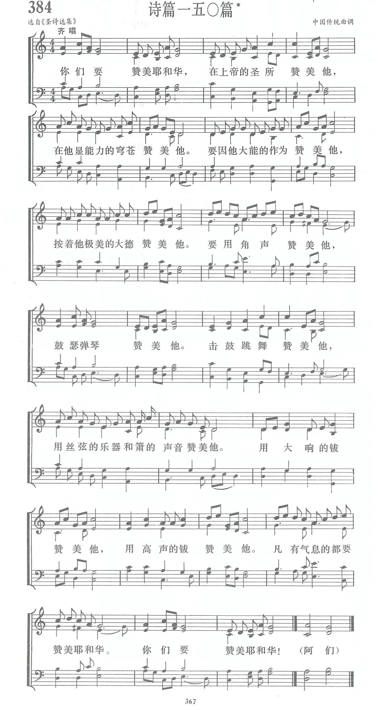

|
|
【詩篇一百五十篇】 |
|
|
你們要讚美耶和華，在上帝的聖所讚美祂，
|
|
https://www.zanmeishige.com/tab/14057.html?songbook=1&index=384 第384首 -诗篇一五零篇
 |
|
|
|
|
-
詩篇一百五十篇 Psalm 150 (詞: 詩篇 150; 曲: Source Unknown) 新心音樂事工 https://www.youtube.com/watch?v=4_ryBn7rDXU
第384首 诗篇一五0篇*
经文：“你们要赞美耶和华!在上帝的圣所赞美他”(诗150：1)。
这是一首欢乐颂扬的诗篇。人们唱时仿佛能听到以色列民族在圣殿中以多种乐器一一角、瑟、琴、丝弦乐器、箫、钹等来发出赞美之声；还能看到击鼓跳舞的场面，使人从心里发出共鸣：“你们要赞美耶和华。”
曲调来源不详，由苏佐扬牧师(简历参阅第3 7 9首)于1937年记谱配词，也充分表达了欢庆的情绪。有的赞美诗集内标明可以男女轮唱，首尾句则齐声合唱，更有丰富多采的效果。
音樂與人生——從《詩篇》150篇談音樂敬拜（賴建國）
賴建國 本文原刊於《舉目》48期
音樂是基督教會的特色，讚美詩歌展露信徒靈性的經驗，闡明信仰的精髓。聚會中，每當天籟般的樂聲響起，不論男女老幼，都全心投入，熱忱唱和，甚至離座而起，手舞足蹈，不能自已。
許多人初到教會，不明白聚會的儀式，也聽不懂所講的內容，卻被詩歌深深吸引。有的詩歌像是節慶歡唱，令人神魂飛揚，激發人對造物主的感恩；有的詩歌似空谷足音，撫慰受創心靈，重建向上心志。
有的詩歌古老沈穩，有的詩歌現代活潑；有的詩歌充滿異國風味，有的詩歌像是中國小調；有的詩歌耳熟能詳，原來電台常常播放；有的詩歌令人驚喜，原來是大師作品……
基督教的詩歌，就像各地的教堂建築，形式千千百百。能夠傳唱至各地的詩歌，總有打動人心、引發共鳴之處。
讚美自始至終
舊約的《詩篇》，總共150篇，其中多篇有音樂標記，甚至用何曲調、何種樂器，都標明得清清楚楚。
《詩篇》第150篇，是《詩篇》的末篇，很適合作為全卷的總結。該篇提到了各種樂器，包括號角、琴瑟、簫、鼓和各種的鈸。有管樂，有弦樂，還有打擊樂器，甚至還有舞蹈，對現代教會的敬拜帶來莫大的啟發。
這篇詩歌以“哈利路亞”開始，又以“哈利路亞”結束。“哈利路亞”就是“你們要讚美耶和華”。全篇一共6節，“讚美”就出現了13次。“讚美”（或是“頌 贊”），原意是大聲歡呼──至深的情感，需要至情至性的表達。這就如耶穌騎驢進入耶路撒冷，“前行後隨的人，都喊著說：‘和撒那！奉主名來的是應當稱頌 的！”（《可》11：9）
“你們要讚美耶和華”中的“要讚美”，乃是命令與邀請。第一，這是必須做的事。有人責備耶穌的門徒，因為他們跟隨耶穌進入耶路撒冷時，大聲讚美神。對此，耶穌回答：“我告訴你們，若是他們閉口不說，這些石頭必要呼叫起來。”（《路》19：40）
再者，“你們要讚美”是邀請眾人同來讚美。許多個人內心深處的情感，往往在聚會中才被引導抒發，才會真情流露。“你們要讚美耶和華”，聖經中，唯有耶和華是“讚美”的受詞──在宇宙萬有中，唯有耶和華配受崇敬、讚美。
地點、內容、理由
《詩篇》第150篇在第1節，提到讚美的地點：
首先，是神的聖所，因為讚美由神的家開始。正如天上的聖所，有天使撒拉弗在主寶座周圍侍立，呼喊：“聖哉！聖哉！聖哉！萬軍之耶和華；祂的榮光充滿全地！”（《賽》6：3）
其次是宇宙穹蒼，包括神創造的大自然。本篇詩歌不僅呼籲以色列民前來敬拜，更邀請天上的天使天軍、太陽、月亮、星宿，甚至地上的一切，包括大魚和深洋、風霜雨霧、山川樹木、蟲魚鳥獸、君王領袖、男女老幼，都來敬拜、頌讚神（《詩》148）。
本篇的第2節，表明讚美應該有具體的內容、充分的理由。要因上帝的恩典作為來讚美祂，更要因上帝的榮耀美德來讚美祂。
其實不僅本篇，《詩篇》全篇都以神為敬拜的對象，以祂為讚美的中心。不論是感恩或抱怨、祈求或讚美、信靠與智慧，皆因對神有豐富的經歷，對神的大恩大德有深刻的體認，而油然發出真誠的贊嘆。
樂器豐富多樣
接下來的第3節到第5節，講述用各種樂器（像是龐大的交響樂團）來讚美神。這些不同種類的樂器，寓意了不同的人群一同敬拜、頌贊神。
角聲
首先，提到的是“要用角聲讚美祂”（第3節）。這是特別指祭司參與敬拜與頌讚。在以色列，吹的角多用羚羊的角作成，聲音低沈，可以傳遠。B. Mazar在耶路撒冷聖殿山南端，發現了一塊巨石（2.43 米 x 1米，見圖一【註一】），上面刻有第二聖殿時期的希伯來文“吹角處”。這應該就是祭司站立吹角之處，宣告安息日的開始。
羅馬提多將軍的凱 旋門浮雕，上有銀號，亦見證那時由祭司帶領，用音樂來敬拜神。聖經中記載祭司在多種場合吹角，包括宣告神臨（《出》19：16-19）；宣告聖會（《利》 23：23-25）；宣告行進（《民》10：2-10）；宣告爭戰（《書》6：4 ；《摩》3：6）。吹角總是宣告重大事件臨到。
鼓瑟彈琴
第3節中，還講到“鼓瑟彈琴讚美祂”。這是指“利未人”，在聖殿中用音樂事奉神。
3，000
年前，大衛王為了預備建造聖殿，把祭司分為24個班，輪流到聖所事奉（《代上》24章）。他更選派利未3大家族的首領：亞薩、希幔、和以探（可能與耶杜頓
是同一個人），帶領族人“在耶和華的約櫃前事奉，頌揚，稱謝，讚美耶和華以色列的上帝”（《代上》16：4-7；《代上》25：1）。他們美妙的樂聲，更
使神的百姓情緒激昂高漲。
當約櫃被迎入耶路撒冷時，利未人用各樣樂器頌贊神，大衛和以色列眾人隨著瑟、鼓、鈸、鑼等樂音，歡欣跳舞（《撒下》6：5；《代上》15：16）。
這些利未人又被稱作“先見”（“先知”的別稱，《代下》29：30，35：15），因為唱詩不只是代表會眾歌頌神，也是代表上帝對會眾傳講信息。他們以音樂事奉神，成為後來教會唱詩班的前身，也為世世代代以音樂敬拜神，建立了良好的制度。
擊鼓跳舞
第4節，講到“擊鼓跳舞讚美神”。這是最歡樂、興奮的敬拜方式。鼓是最古老的打擊樂器之一，在圓形的架上蒙上一層緊繃的動物皮，就可用手或鼓槌，敲擊出聲。
鼓的形狀大小不一，還可附加各種配件，產生不同的音效。鼓可單獨使用，也可許多不同種類、數量的鼓一同演奏。鼓聲可用來傳遞信息、指揮行進，很適合用於祭典、打仗及軍樂隊；鼓聲也具有強烈的節奏，配合音樂與舞蹈，最能震攝人心，產生激昂的情緒。
現代樂團所用的套鼓，出現在9世紀末，廣泛用於流行音樂，近年也被許多教會的敬拜讚美團採用。
舊約中多次提到擊鼓跳舞，且多是婦女參與。第一次是慶祝以色列民出埃及，“亞倫的姊姊女先知米利暗，手裡拿著鼓，眾婦女也跟她出去拿鼓跳舞。”（《出》15：20）這是聖經中第一次提到用樂器伴奏敬拜神。
士師時期，耶弗他的女兒，“拿著鼓跳舞出來迎接他”（《士》11：34）。
婦女跳舞，迎接凱旋之軍，也出現在掃羅王時。當大衛打死了巨人歌利亞後，隨眾人回來，“婦女們從以色列各城裡出來，歡歡喜喜，打鼓奏樂，唱歌跳舞，迎接掃羅王。”（《撒上》18：6）
《詩篇》也提到擊鼓的童女，“歌唱的行在前，作樂的隨在後”，一同宣告耶和華神是王（《詩》68：25）。
然而在公眾面前跳舞，絕非婦女、孩童的專利，因為聖經記載，當以色列人迎接約櫃進入耶路撒冷時，“大衛穿著細麻布以弗得，在耶和華面前極力跳舞”（《撒下》6：14）。
“以弗得”是祭司的禮服，穿著以弗得在耶和華面前事奉，是極其莊嚴、神聖的。大衛卻穿著以弗得，在眾人面前“極力跳舞”，表達的是對神的謙卑愛戴。
圖二是1320年，在西班牙巴塞羅那出版的猶太人逾越節手冊上，就繪有米利暗與婦女擊鼓跳舞敬拜神。13世紀，法國路易九世的《摩根聖經》（Morgan Bible，又稱作《馬切卓斯基聖經》The Maciejowski Bible），上面繪有“大衛打敗歌利亞，眾人擊鼓跳舞迎接凱旋軍”，顯示猶太和基督教會都有擊鼓跳舞敬拜神的傳統。
今日許多教會的聚會中也有舞蹈，在優美樂聲中以肢體動作，表達對神最真誠的敬拜。
絲絃、簫
第4節中，繼續講到用“絲絃的樂器和簫的聲音”讚美神。在古代以色列，絲絃的樂器，似乎屬於宮廷的雅樂，用於君王的婚禮（《詩》45：8），和聖殿的敬拜（《賽》38：20）。
而簫則屬於牧野蘆笛，可能是聖經最早提到的樂器。《創世記》記載，猶八“是所有彈琴吹簫之人的祖師”（《創》4：21）。簫也是雅俗共賞的樂器（約伯就曾特別提及），好像大人小孩都喜歡，男女老少都欣賞（《伯》21：12）。
音樂也常是最能勾起思鄉愁緒的。《《詩篇》》記載，被擄到巴比倫的以色列民，一追想錫安就哭了。他們把豎琴掛在柳樹上，因為有人要他們唱一首錫安的歌，他們哀嘆：“我們怎能在外邦土地，唱耶和華的歌呢？”（《詩》137：1-4）
鈸
本篇第5節提到，“大響的鈸”和“高聲的鈸”。近東【註二】自古以來，就有不少這一類的敲擊樂器，今日仍可見到亞述的鈸和銅製的手鈴，甚至有男女持鈸的陶像。
鈸和其他敲擊樂器一樣，往往使用在樂曲的最後，為的是增添效果──那時樂曲到達最高潮，人的情緒也達到最高峰。鐘鼓齊鳴、鈸聲震耳、角聲高舉，所有人高唱齊唱……同慶耶和華在我們當中，接受人最大的敬拜。
為什麼要頌讚？
在此，我們一同思考讚美的意義：
首先，誰能頌讚神呢？死人當然不能稱頌神。因此，《詩篇》的作者呼籲蒙恩得救的人、敬畏耶和華的人、尋求祂的人，都要讚美祂。詩人更呼籲耶路撒冷、萬國萬 民，及天、地、海和其中的一切動物都讚美神，甚至天上的日、月、星宿，耶和華的眾天使，都要讚美祂。讚美是蒙恩經歷神的自然結果，讚美更產生巨大無比的影 響力。
其次，我們當思索：為何要頌讚神呢？詩人特別提出，要因耶和華的慈愛與美德讚美祂，要因祂所行的奇事與作為讚美祂，要因祂豐富的供應與保護讚美祂，要因祂公義的律法與教誨讚美祂。天使頌贊神的創造；蒙恩得救的人，稱頌神的救恩。
那麼我們當在何處頌讚神呢？首先當然應該在聖殿中讚美，因為聖殿是敬拜神的中心，頌贊要從神的家開始。其次當在聚會中讚美，不限於教堂裡面，或是有優美音響效果的場所，更要在各人的家中、小組聚會中，甚至在大自然中讚美神。
最要緊的，是要從內心來頌讚神，口唱心和地以詩歌來頌讚祂。口唱仍覺不足的，當以各種樂器伴奏，甚至擊鼓跳舞來頌讚神（《詩》68：25，81：2，149：3，150：4）。
新歌老歌同唱
聚會崇拜，詩歌不可少。詩歌可振奮人心，提升靈性。
《詩篇》鼓勵人多唱新歌（《詩》96：1，98：1）。因為我們的神豐富偉大，祂的恩典天天更新。新的經歷，新的感受，總能激發新的靈感，產生新的詩作，譜出新的歌曲。
但是歡唱新的詩歌，不代表要排斥老的詩歌。傳統詩歌本收錄的，多是歷代精品，歷久彌新，像是1，000前聖伯納的《創傷的頭》，500年前馬丁•路德的《千古保障》。
而18世紀，更開啟了聖詩的黃金時代，包括英語聖詩之父以撒•華茲（1674-1748），約翰•衛斯理的弟弟查理士•衛斯理（1707-1788），都是譜寫詩歌的佼佼者。
至於芬尼•克羅斯比的《有福的確據》，約翰•牛頓的《奇異恩典》，至今仍是眾人最愛吟唱的聖詩。這些聖詩見證先聖先賢的靈性情操。屬靈復興運動也往往伴隨偉大的詩歌。
然而詩歌那麼多，要如何選擇詩歌呢？好的詩歌，首先要曲調優美，詞句典雅。其次當合乎音律，順口易唱。當然更要發抒情感，回應神的愛。而且應當信仰純正，提升靈性。也要配合聚會和歡樂節慶。
詩歌是為了聚會，唱詩須打動人心。因此當注重信息，傳揚真理，發抒情感，帶出行動。選好的詩歌配合聚會，固然重要，帶領會眾同心歌唱，虔心敬拜真神，更要謹慎從事。
不論是獨唱，還是敬拜讚美團帶領詩歌敬拜，或是詩班在崇拜中獻詩，都要專業與靈命配合，把最好的獻給神。不僅要平日勤加練習，增進歌唱技巧，注重紀律與合一，更要提升靈性，手潔心清，因為這是寶座前的事奉。
好的詩歌與好的講道相得益彰，二者使敬拜的形式與內容更加豐富，使人的宗教體驗提升。好的詩歌甚至超過講道，因為優美的旋律與歌詞，可重複傳唱，不斷感動人心，流傳千古。
作者來自台灣，前台灣中華福音神學院院長。現為香港中國神學研究院客座教授。本篇是賴教授在《舉目》雜誌發表的“詩篇與人生”系列文章